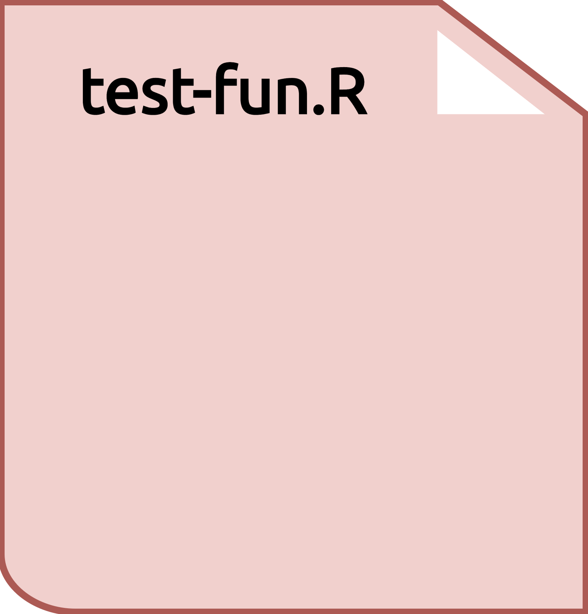
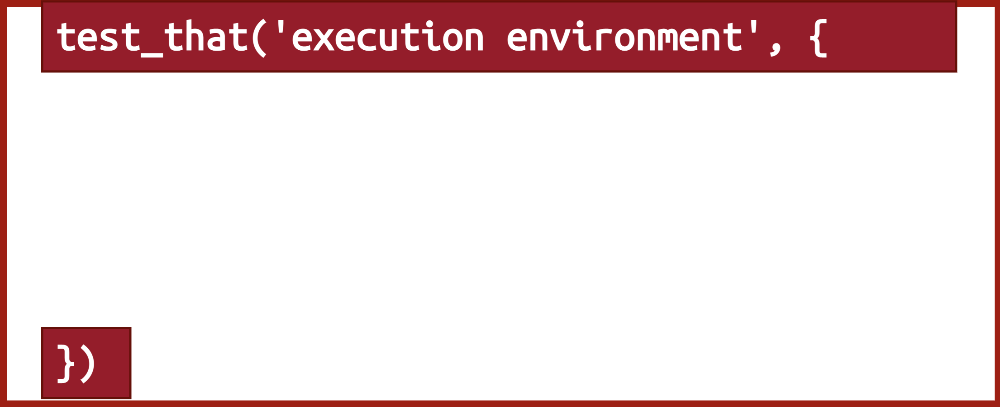
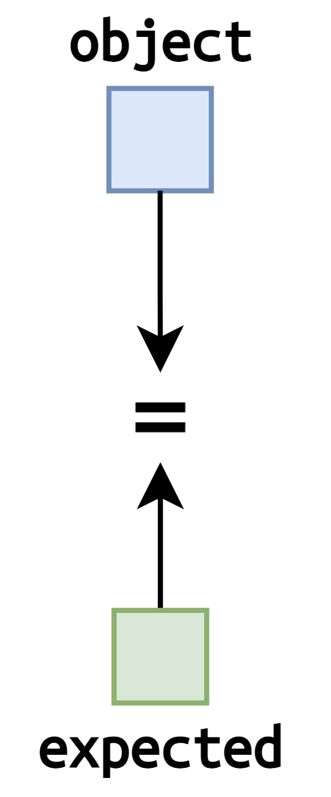
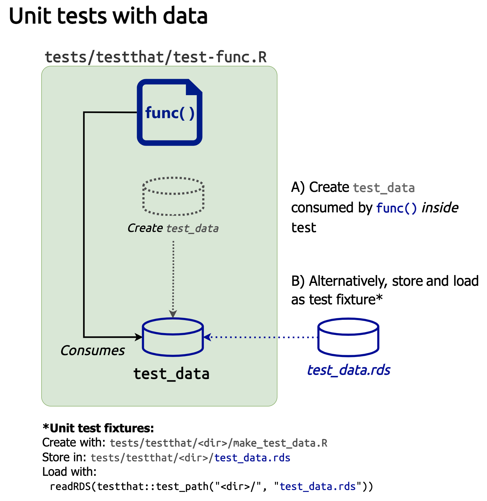
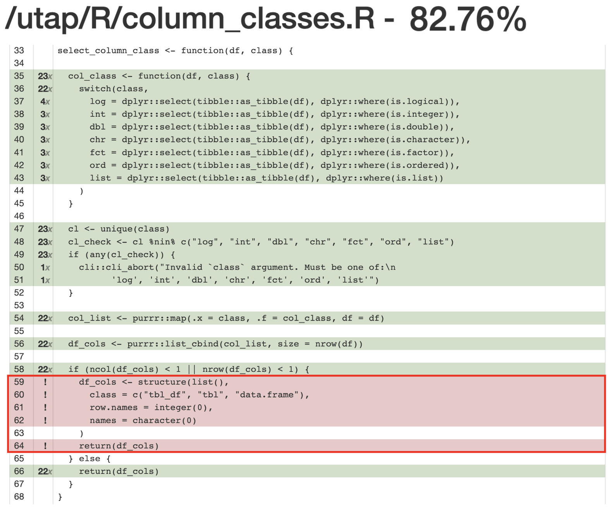
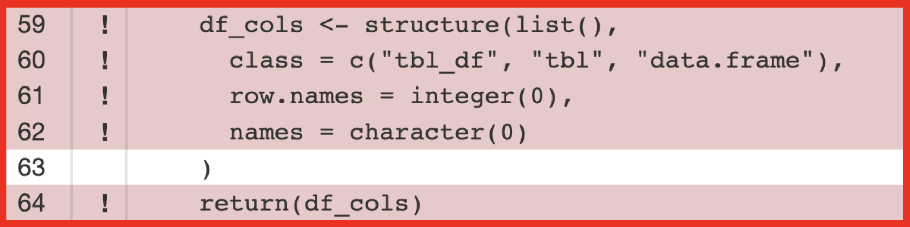
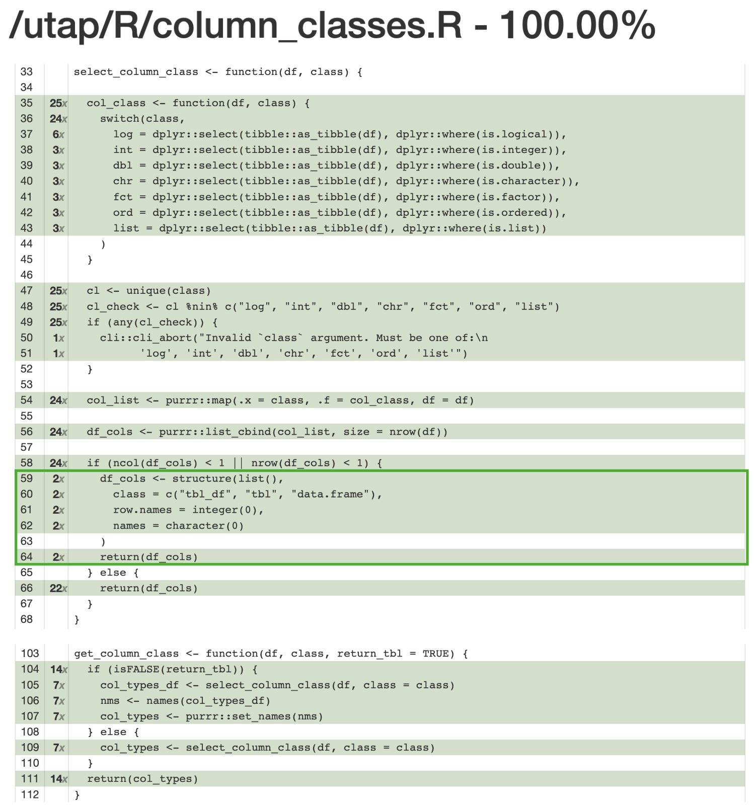
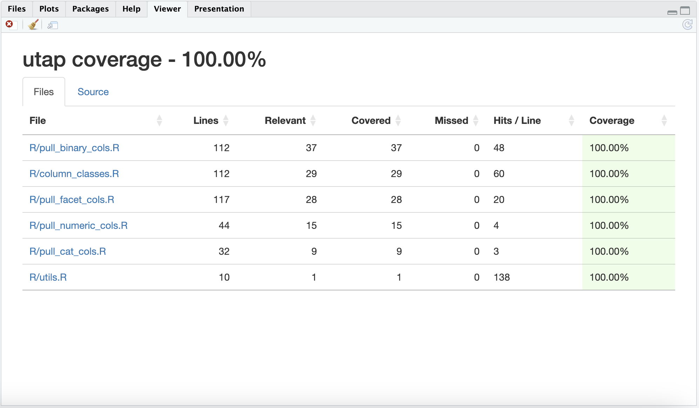

packages
library(testthat)
library(lobstr)
library(dplyr)
library(shiny)
library(covr)library(testthat)
library(lobstr)
library(dplyr)
library(shiny)
library(covr)This post is the first in a series on testing shiny applications. I’ll cover developing and testing a set of utility functions for a shiny app-package using testhat. If you’d like to follow along, all the code I’ll be using is contained in the utap R package on GitHub.
# renv::install("mjfrigaard/utap")
library(utap)Testing the code in shiny app-packages can be more complicated than testing the code in a typical R package, because app-packages contain two types of code:
Application code: functions designed to run the application (i.e., the ui and server functions, modules, standalone app functions will a call to shinyApp(), etc.)
Everything else: functions or code used for connecting to databases, uploading, importing, or manipulating data, building visualizations and/or tables, generating custom HTML layouts, etc. The non-application code and functions in app-packages are typically referred to as ‘utility’ or ‘helper’ functions
These two types of code require different types of tests. Utility functions are usually accompanied by unit tests similar to the tests you’d find in a standard R package, while application code is tested using the shiny::testServer() function, or with the shinytest2 package.
This post will cover writing unit tests for a set of utility functions using testthat and covr. Any tips or time-savers I’ve found will be in green callout boxes:

“A unit test is a piece of code that invokes a unit of work and checks one specific end result of that unit of work. If the assumptions on the end result turn out to be wrong, the unit test has failed. A unit test’s scope can span as little as a method or as much as multiple classes.” - The Art of Unit Testing, 2nd edition
I’ve found thinking of functions as ‘units of work’ and their desired behavior as an ‘end results’ provides a useful mental model during TDD. These terms also align nicely with the testing advice offered by testthat:
Strive to test each behaviour in one and only one test. Then if that behaviour later changes you only need to update a single test.
In app-packages, the testthat package provides a comprehensive and flexible framework for performing unit tests.
Get started with testthat in your app-package by running usethis::use_testthat(). This function will create following files and folders:
tests/
├── testthat/
└── testthat.RTo create new tests, run usethis::use_test("utils_fun") (with "utils_fun" being the name of the function you’d like to test).
usethis::use_test("utils_fun")✔ Setting active project to '/projects/apps/utap'
✔ Writing 'tests/testthat/test-utils_fun.R'
• Modify 'tests/testthat/test-utils_fun.R'New test files are be created and opened from the tests/testthat/ folder (with a test- prefix).
The initial contents of a new test file contains the boilerplate code below:
test_that("multiplication works", {
expect_equal(2 * 2, 4)
})
Test files
test_that() sets the test “scope” or “execution environment”, and encapsulates the expectations.
Note the use of curly brackets after the code argument:
testthat::test_that(desc = "description", code = {
})
testthat test
Test expectations are the code that comes into direct contact with the unit of work and end result for each function. There are usually multiple expectations for any given function, so these are stored in tests (and the desc describes the test context for the set of expectations).
All testthat expectations have an expect_* prefix:
testthat::expect_equal(object = 2 * 2, expected = 4)
testthat expectation
I develop unit tests using the following workflow:
Create the test file and R script: I’ll start by creating these files with usethis::use_r() and usethis::use_test(), even if I know the names of these files will likely change as I develop (see more below).
Define test context: I use the test context (entered as a character string in the first argument of testthat::test_that()) to capture each “unit of work” for each function. I like to keep the test context short and sweet–the “unit of work” followed by “works” will suffice in most circumstances, unless there’s a need for more specific details.
Write expectations: These are the third item in the workflow, but conceptually these comes first–these are the “end results” I want from each function (i.e., compute a value, download a file, create a column, etc.).
Tests and expectations are grouped into test files based on their related objectives or goals, and should correspond to a similar .R file in the R/ folder.
While this workflow is probably not technically considered test-driven development, I do set up the tests before I start writing any code in the R/ folder. This comes in handy if you’re having to remind yourself where you stopped developing on a given project–I’ll just run devtools::test() and the first failing test reminds me where to look.
The utility functions I’ll be developing are designed to populate the choices argument for shiny::selectInput(). For example, the pull_numeric_cols() function would ‘pull’ the column names from an input data.frame or tibble (the example below uses palmerpenguins::penguins):
pull_numeric_cols(palmerpenguins::penguins)## bill_length_mm bill_depth_mm flipper_length_mm
## "bill_length_mm" "bill_depth_mm" "flipper_length_mm"
## body_mass_g year
## "body_mass_g" "year"The return values would be passed to an updateSelectInput() in the server to provide column names by type (i.e., numeric, binary, or categorical). These functions can be used to quickly group variables into groups for data visualizations. For example, binary variables can be mapped the color aesthetic (if using ggplot2), and custom functions can be created for other graph layers (i.e., facets).
The unit of work for each hypothetical pull_[type]_cols() function would be, “ingest a data.frame or tibble and identify columns by type,” and their end result might be “return a (named) vector of column names by type.” In this case, [type] refers to the variable type (i.e., numeric, categorical, binary, etc.). See the hypothetical UI output example below:
# UI code
shiny::selectInput(
inputId = ns("x"),
label = "X variable:",
choices = NULL
)# server code
shiny::observe({
num_vars <- pull_numeric_cols(df = data())
shiny::updateSelectInput(session,
inputId = "x",
choices = num_vars,
selected = num_vars[1])
}) |>
shiny::bindEvent(data(),
ignoreNULL = TRUE)In the example above, pull_numeric_cols() is passed a reactive dataset (data()), and the output is used to update the selectInput().
In R packages, micro-iteration is defined as, “the interactive phase where you initiate and refine a function and its tests in tandem.” If you’re using TDD, you’ll write the test first, then write the function to pass the test.
The first unit test I’ll create is for select_column_class(), a function designed to return columns according to their class().
Coming up with names for functions can be challenging. I like to follow the tidyverse style guide and use short verbs as a prefix (make_, get_, check_ etc.). I also like to use names that give ‘future’ me hints as to their behavior (i.e., select_column_class() imports and has similar behavior to dplyr::select(), while pull_[type]_cols() is more like dplyr::pull())
I create the test file and function file in the Console
usethis::use_test("select_column_class")✔ Setting active project to '/projects/apps/utap'
✔ Writing 'tests/testthat/test-select_column_class.R'
• Modify 'tests/testthat/test-select_column_class.R'usethis::use_r("select_column_class")• Modify 'R/select_column_class.R'The test context (entered as a character string in the first argument of testthat::test_that()) includes the “unit of work” for the function, followed by “works”:
testthat::test_that(desc = "select_column_class() is.tibble/is.data.frame works", {
})Before I can start developing the select_column_class() function and it’s tests, I’ll need data. R comes with example data objects in the datasets package, but it’s nice to have control over the data being used in your unit tests. I’ll cover how to add test data available in your app-package.
Creating test data is covered in R packages, but I’ll summarize the key points:
tests/testthat/fixtures/<test_data.rds>make_ prefix (i.e., tests/testthat/fixtures/<make_test_data.R>)This is easier to picture with a demonstration: In the tests/testthat/ folder, I’ll create a new fixtures folder, and add a make_testdata_col_class.R file.
tests/testthat/
└── fixtures/
└── make_testdata_col_class.RIn make_testdata_col_class.R, I’ll create testdata_col_class using the code below:
testdata_col_class <- tibble::tibble(
log_var = c(TRUE, FALSE, TRUE),
int_var = c(1L, 2L, 3L),
dbl_var = c(1.1, 2.2, 3.3),
chr_var = c("item:1", "item:2", "item:3"),
fct_var = factor(
c("group 1", "group 2", "group 3"),
levels = c(
"group 1", "group 2", "group 3")),
ord_var = factor(
c("level 1", "level 2", "level 3"),
levels = c("level 1", "level 2", "level 3"),
ordered = TRUE),
list_var = list(
log_vec = c(TRUE, FALSE),
dbl_vec = c(1.1, 2.2),
chr_var = c("item:1", "item:2")))testdata_col_class
## # A tibble: 3 × 7
## log_var int_var dbl_var chr_var fct_var ord_var list_var
## <lgl> <int> <dbl> <chr> <fct> <ord> <named li>
## 1 TRUE 1 1.1 item:1 group 1 level 1 <lgl [2]>
## 2 FALSE 2 2.2 item:2 group 2 level 2 <dbl [2]>
## 3 TRUE 3 3.3 item:3 group 3 level 3 <chr [2]>I’ll save testdata_col_class in tests/testthat/fixtures/ as testdata_col_class.rds:
tests/testthat/
└── fixtures/
├── make_testdata_col_class.R
└── testdata_col_class.rdsTo load the data into my test, I’ll add the following to the top of the test context:
test_that(desc = "select_column_class() is.tibble/is.data.frame works", {
testdata_col_class <- readRDS(test_path("fixtures", "testdata_col_class.rds"))
})testthat::test_path() will load the data from the testing directory when I’m ready to run my test.
In expect_equal(), I’ll verify the structure of the returned object is a data.frame/tibble.
test_that("select_column_class() is.tibble/is.data.frame works", {
testdata_col_class <- readRDS(test_path("fixtures", "testdata_col_class.rds"))
# check tibble
testthat::expect_equal(
object =
select_column_class(
df = testdata_col_class,
class = "???") |>
tibble::is_tibble(),
expected = TRUE)
})Writing my expectations first forces me to make some decisions about what the arguments will be for the select_column_class() function (i.e., df and class).
select_column_class() should return the columns according to their class, so I’ll tests to verify the class of the return columns.
# check logical
testthat::expect_equal(
object =
select_column_class(
df = testdata_col_class,
class = "log") |>
lapply(is.logical) |> unlist() |> unique(),
expected = TRUE)I try to write these in a way that’s flexible (should the test data change in the future).
After including tests for each class, I’ll include a test for the error message from select_column_class() with testthat::expect_error():
# test error type
testthat::test_that("select_column_class() type error", {
testdata_col_class <- readRDS(test_path("fixtures", "testdata_col_class.rds"))
# test type error
testthat::expect_error(
object = select_column_class(
df = testdata_col_class,
class = "array")
)
})When I’ve covered my intended ‘end results’ for select_column_class() (i.e., when it works and what happens when it doesn’t), I’ll write the function:
select_column_class <- function(df, class) {
col_class <- function(df, class) {
switch(class,
log = dplyr::select(tibble::as_tibble(df), dplyr::where(is.logical)),
int = dplyr::select(tibble::as_tibble(df), dplyr::where(is.integer)),
dbl = dplyr::select(tibble::as_tibble(df), dplyr::where(is.double)),
chr = dplyr::select(tibble::as_tibble(df), dplyr::where(is.character)),
fct = dplyr::select(tibble::as_tibble(df), dplyr::where(is.factor)),
ord = dplyr::select(tibble::as_tibble(df), dplyr::where(is.ordered)),
list = dplyr::select(tibble::as_tibble(df), dplyr::where(is.list))
)
}
cl <- unique(class)
cl_check <- cl %nin% c("log", "int", "dbl", "chr", "fct", "ord", "list")
if (any(cl_check)) {
cli::cli_abort("Invalid `class` argument. Must be one of:\n
'log', 'int', 'dbl', 'chr', 'fct', 'ord', 'list'")
}
col_list <- purrr::map(.x = class, .f = col_class, df = df)
df_cols <- purrr::list_cbind(col_list, size = nrow(df))
if (ncol(df_cols) < 1 || nrow(df_cols) < 1) {
df_cols <- structure(list(),
class = c("tbl_df", "tbl", "data.frame"),
row.names = integer(0),
names = character(0)
)
return(df_cols)
} else {
return(df_cols)
}
}Below is a summary of tips for adding data your tests.

The select_column_class() will return a tibble() with the columns matching the class argument, but I’ll also need an argument that allows me to adjust the returned object to a named character vector.
That’s the job of get_column_class()–this is a wrapper around select_column_class() with an additional return_tbl argument that, if FALSE, returns the column names as a named vector.
While developing R functions, I’ve found the ast() function from the lobstr package can be great for keeping track of nested function calls.
For example, select_column_class() has a nested col_class() function that isn’t tested directly. So how do I make sure I’m keeping track of these nested functions in case they throw an error? I’ll build an abstract function tree for the function in the documentation.
Below is the abstract syntax tree for select_column_class():
█─select_column_class
└─█─col_class The tree above is simple–it only has two functions so far–but as packages grow these abstract displays become more important for tracking function calls (and tests!).
get_column_class() calls select_column_class(), so I’ll place both unit tests in the tests/testthat/test-column_classes.R file, and create the corresponding R/column_classes.R file
To capture these nested functions visually, I’ll include a function tree in a vignette or other source documentation.
█─get_column_class
└─█─select_column_class
└─█─col_class I’ve combined select_column_class() and get_column_class() into a single file because I know every pull_[type]_cols() function would use get_column_class(). The following function tree captures this relationship.
█─get_column_class
├─█─select_column_class
│ └─█─col_class
├─█─pull_binary_cols
├─█─pull_facet_cols
├─█─pull_cat_cols
└─█─pull_numeric_cols In the test-column_classes.R test file, I’ll need more data for testing, but rather than create test data files for each test, I’ll use test helpers to create the test data.
Test helpers are stored in tests/testthat/helper.R and usually contain functions or code that 1) is too long to repeat with each test, and 2) doesn’t take too much time or memory to run. Read more about test helpers here.
I’ve created a set of test helpers in utap for creating different kinds of test data (because I’ll be repeatedly defining columns with slightly different attributes).
For example, col_maker() can be used to create a tibble with columns based on the col_type, size, and missing:
col_maker(col_type = c("log", "int", "dbl",
"chr", "fct", "ord"),
size = 6,
missing = TRUE)
## # A tibble: 6 × 6
## log_var int_var dbl_var chr_var fct_var ord_var
## <lgl> <int> <dbl> <chr> <fct> <ord>
## 1 TRUE 1 0.1 item:1 group 1 level 1
## 2 FALSE 135 3 item:2 group 2 level 2
## 3 NA 269 NA item:3 group 3 level 3
## 4 TRUE 403 0.1 <NA> <NA> <NA>
## 5 FALSE NA 3 item:1 group 1 level 1
## 6 NA 1 NA item:1 group 2 level 2I can also create tibbles with custom columns using individual helper _maker() functions:
tibble::tibble(
log_var = log_maker(size = 2),
int_var = int_maker(size = 2),
dbl_var = dbl_maker(size = 2),
chr_var = chr_maker(size = 2),
list_var = list(fct_var = fct_maker(size = 3),
ord_var = ord_maker(size = 3)),
)
## # A tibble: 2 × 5
## log_var int_var dbl_var chr_var list_var
## <lgl> <int> <dbl> <chr> <named list>
## 1 TRUE 1 0.1 item: 1 <fct [3]>
## 2 FALSE 7 1 item: 2 <ord [3]>These helpers make it easier to iterate through the test expectations and function development, because tibbles like the one above can be developed inside each test.
Below is an example for testing if get_column_class() will correctly identify the logical columns (for both return objects):
testthat::test_that("get_column_class() logical", {
# test logical class
testthat::expect_equal(
object = get_column_class(
# use test helper
df = col_maker(
col_type = c("log", "int", "dbl", "chr"),
size = 6,
missing = FALSE,
lvls = 4),
class = "log") |>
unlist() |>
is.logical(),
expected = TRUE
)
# test logical names
testthat::expect_equal(
object = get_column_class(
# use test helper
df = col_maker(
col_type = c("log", "int", "dbl", "chr"),
size = 6,
missing = FALSE,
lvls = 4),
class = "log",
return_tbl = FALSE
),
expected = c(log_var = "log_var")
)
})When I’m confident with the get_column_class() function and it’s tests, I’ll save the test file and run testthat::test_file().
get_column_class <- function(df, class, return_tbl = TRUE) {
if (isFALSE(return_tbl)) {
col_types_df <- select_column_class(df, class = class)
nms <- names(col_types_df)
col_types <- purrr::set_names(nms)
} else {
col_types <- select_column_class(df, class = class)
}
return(col_types)
}testthat::test_file("tests/testthat/test-column_classes.R")[ FAIL 0 | WARN 0 | SKIP 0 | PASS 23 ]How many tests should I write?
As function behavior grows in complexity, so does the number of expectations. In testthat, expectations are captured in tests, and code coverage measures the extent to which the tests in the tests/testthat/ folder cover the possible execution paths of the functions in the R/ folder (i.e. the package codebase).
Code test coverage is a way to confirm that the unit tests are robust enough to verify that your code behaves as expected. In R packages, code coverage is discussed in the testing chapter using the covr package.
During development, check the code coverage of a test file with devtools::test_coverage_active_file(), or, if this function is being temperamental, use the combination of functions below from covr:
covr::file_coverage(
source_files = "R/column_classes.R",
test_files = "tests/testthat/test-column_classes.R") |>
covr::report()Below is the output in the Viewer when devtools::test_coverage_active_file() is entered in the Console:

devtools::test_coverage_active_file()I can see from the output I don’t have test coverage for the select_column_class() behavior when the class argument doesn’t return any columns from df. The function is designed to return an empty tibble if this occurs:

select_column_class()select_column_class()To test this behavior, I’ll write two expectations:
The first expectation (expect_s3_class()) checks the class of the return object from select_column_class():
# test class of empty tibble
testthat::expect_s3_class(
object = select_column_class(
df = col_maker(col_type = c("int", "dbl"),
size = 6,
missing = FALSE),
class = "log"),
class = c("tbl_df", "tbl", "data.frame"))The second expectation verifies there are zero columns in this return tibble:
# test rows of empty tibble
testthat::expect_equal(
object = ncol(select_column_class(
df = col_maker(col_type = c("int", "dbl"),
size = 6,
missing = FALSE),
class = "log")),
expected = 0L)After adding these tests to the test-column_classes.R test file, I’ll run testthat::test_file() and devtools::test_coverage_active_file() again:
testthat::test_file("tests/testthat/test-column_classes.R")[ FAIL 0 | WARN 0 | SKIP 0 | PASS 25 ]devtools::test_coverage_active_file()
devtools::test_coverage_active_file()column_classes.R100% is great, but uncommon. Striving for a high percentage of coverage is a good practice, it doesn’t guarantee that the function always behaves as expected. Unit tests might execute a line of code, but still not catch a bug due to the design of the test (it’s easy to have high coverage if the unit tests are shallow and don’t check for any potential edge cases).
I’ll address code coverage again in the next section, but checking coverage regularly will help ensure function behaviors don’t go overlooked.
After developing the functions in utap, the files in the R/ folder are organized into names based on the ‘main function and its supporting helpers’:
R/
├── column_classes.R
├── pull_binary_cols.R
├── pull_cat_cols.R
├── pull_facet_cols.R
├── pull_numeric_cols.R
└── utils.RThe tests/testthat/ folder file names have identical names as the files in the R/ folder.
tests/testthat/
├── test-column_classes.R
├── test-pull_binary_cols.R
├── test-pull_cat_cols.R
├── test-pull_facet_cols.R
├── test-pull_numeric_cols.R
└── test-utils.RR/utils.RIt’s common for R packages to have a general R/utils.R file that defines the ‘utility’ functions. This practice isn’t discouraged in R Packages, but these files can become a catch-all for any functions that don’t have a clear home (read more here).
I’ve only stored the %nin% operator in R/utils.R, and it’s test is shown below:
testthat::test_that("%nin% works", {
testthat::expect_false(
object = "A" %nin% LETTERS)
testthat::expect_false(
object = 1 %nin% 1:10)
testthat::expect_true(
object = 1 %nin% 2:10)
})When I’ve completed a set of test files, I can use devtools::test() to check if they’re passing.
devtools::test()ℹ Testing utap
✔ | F W S OK | Context
✔ | 25 | column_classes
✔ | 29 | pull_binary_cols
✔ | 4 | pull_cat_cols
✔ | 20 | pull_facet_cols
✔ | 5 | pull_numeric_cols
✔ | 3 | utils
══ Results ═════════════════════════════════════════════════════════════════════
Duration: 2.1 s
[ FAIL 0 | WARN 0 | SKIP 0 | PASS 86 ]
🎯 Your tests hit the mark 🎯The output above shows all tests are passing (and some helpful words of encouragement). As you can see, the number of tests correspond to the number of functions in each test file.
For example, pull_binary_cols() and pull_facet_cols() required additional internal functions to define their use:
█─pull_binary_cols
├─█─check_binary_vec
│ ├─█─check_log_binary
│ ├─█─check_int_binary
│ └─█─check_fct_binary
└─█─make_binary_vec █─pull_facet_cols
├─█─check_facet_vec
│ ├─█─check_chr_facet
│ └─█─check_fct_facet
└─█─make_facet_vec Wheras pull_cat_cols() and pull_numeric_cols() map onto existing classes:
█─pull_cat_cols
├─█─is.factor
└─█─is.character █─pull_numeric_cols
├─█─is.integer
└─█─is.double To check the code coverage for the utap package, I can run devtools::test_coverage() to view the output in the Viewer.
devtools::test_coverage()ℹ Computing test coverage for utap
utap packagedevtools::test_coverage()Clicking on any of the Files will open the Source tab and give a summary like the one above from devtools::test_coverage_active_file(). I can also use covr::package_coverage() in the Console for simpler output:
utap Coverage: 100.00%
R/column_classes.R: 100.00%
R/pull_binary_cols.R: 100.00%
R/pull_cat_cols.R: 100.00%
R/pull_facet_cols.R: 100.00%
R/pull_numeric_cols.R: 100.00%
R/utils.R: 100.00%Sometimes it’s interesting to view the relationship between function size and number of tests using the cloc package..
library(cloc)cloc stands for Count Lines of Code, and it’s a rough metric used to gauge code complexity. It’s simple, but apparently provides “just as much predictive power as more elaborate constructs like cyclomatic complexity.”source
Below is a count of the lines of code in each file in the R folder:
cloc::cloc_by_file("R")# A tibble: 8 × 6
source filename language loc blank_lines comment_lines
<chr> <chr> <chr> <int> <int> <int>
1 R "R/pull_binary_cols.R" R 53 2 57
2 R "R/pull_facet_cols.R" R 42 2 73
3 R "R/column_classes.R" R 41 6 65
4 R "R/pull_numeric_cols.R" R 19 1 24
5 R "R/pull_cat_cols.R" R 13 0 19
6 R "R/utils.R" R 3 0 7
7 R "R/utap-package.R" R 2 0 7
8 R "" SUM 173 11 252This output also confirms the relationship between lines of code and tests.
This post has been an introduction to unit testing utility functions in a shiny app-package. When I’m confident the utility functions are working, I’ll start adding them into modules (and testing with testServer() or shinytest2). Files names can change a lot throughout the course of developing a shiny app-package, so it’s helpful to adopt (or create) a naming convention.
If you’re using the golem framework to develop your shiny app-package, the utils_ and fct_ prefixes are used to define two different types of utility/helper functions:
utils_ files contain ‘small helper functions and’top-level functions defining your user interface and your server function’
fct_ files contain ‘the business logic, which are potentially large functions…the backbone of the application and may not be specific to a given module’.
This particular file naming convention isn’t required, but as with most conventions, it’s better when someone else comes up with the standard (and I just have to adopt and implement it). And having and sticking to a naming convention is typically more important than the convention itself.